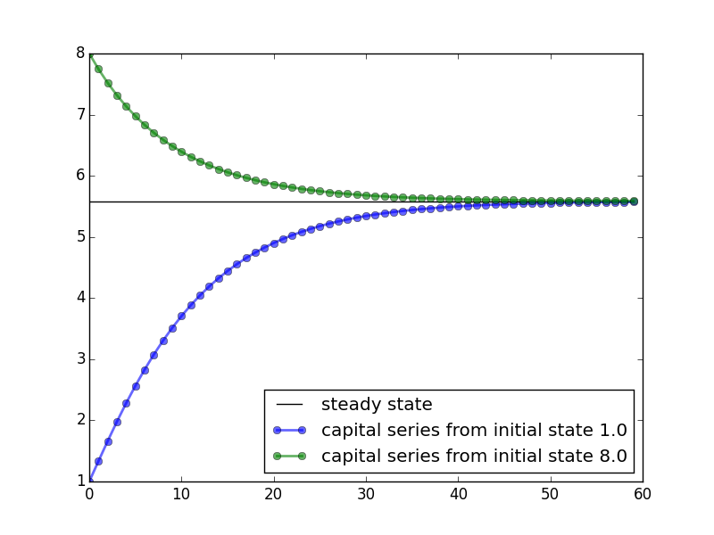

Object Oriented Programming¶
Defining Your Own Classes¶
Pythonにおいて，最も重要な役割を果たすものの１つである， Class について学びましょう.
簡単なClassの例¶
まずは，最も簡単な Class を例にあげてみます．
以下では，消費者のWealthを入力する， Class を考えます．:
>>> class Consumer:
>>> pass
>>>
このような， Class は以下のように動作します．:
>>> c1 = Consumer() # インスタンスをつくる
>>> c1.wealth = 10
>>> c1.wealth
10
最初に class と打ち込むのは，classを定義を宣言するためです．
pass は何もしない操作，null operationと呼ばれ，空の定義をするときに使います．
Class を定義する分では，インスタンスを定義しなくては行けませんが（インスタンスついては後述します），この例では，インスタンスの導入を後からしたかったので， pass を用いました．
passの必要性
passの必要性は，以下の関数の定義の例を考えてみれば，実感できるでしょう．
関数をその定義を未定義のまま行います．:
>>> def f(hoge):
File "<ipython-input-4-6d64f3c8a06a>", line 1
def f(arg):
^
SyntaxError: unexpected EOF while parsing
とエラーがでてしまいますが，pass をつかうと，
>>> def f(arg): pass
そもそも関数の定義自体を行わないので，エラーメッセージは出ません．
Consumer classの中身
次に，作った Consumer Class の中身をみてみましょう．．
dir() で機能を尋ねることができます．:
>>> dir(Consumer)
['__doc__', '__module__']
用語についての説明¶
class definition(クラスの定義)では， class をどのようなものにするかの設計図を書きます．
そこでは，
- どんなdataを格納するか
- どんなmethodを，格納したdataに対して働かせるか
を定義します．
インスタンス（オブジェクト） は Class を具現化したもので，class definition で作られます．インスタンスは，
- 特定のdataを持ち
- class definition で与えられた，methodが働きかける対象
です．
Pythonでは，dataもmethodも，同じようにattributeと呼びます．この，attribute 同士は . を通して作用し合います．
例えば，
object_name.dataobject_name.method_name()
というようにです．
もう少し，具体的な例でみてみると，:
>>> x = [1, 5, 4]
>>> x.sort()
>>> x.__class__
list
というような，働きをします．
一行目では， x がインスタンスとして働きます．そして，特定のデータを持つ， list が格納されていることがわかると思います．それにたいして，組み込み関数の sort() を作用させ，中身を昇順に並べ替えます．xがどのようなデータを持つインスタンスかは， __class__ というattributeを作用させることで調べることができます．また，先のように dir() を使えば x のすべてのattributeをみることができます．
もう少し複雑なClassの例(Another Consumer Class)¶
最初に定義した class よりも，複雑な class を定義してみましょう．
その， class では， consumer が所得を獲得し，支出をおこないます．
まずは，その定義を最初に提示して，詳しく内容をみてみましょう．
class Consumer:
def __init__(self, w):
"Initialize consumer with w dollars of wealth"
self.wealth = w
def earn(self, y):
"The consumer earns y dollars"
self.wealth += y
def spend(self, x):
"The consumer spends x dollars if feasible"
new_wealth = self.wealth - x
if new_wealth < 0:
print("Insufficent funds")
else:
self.wealth = new_wealth
最初の def __init__(self, w): ブロックでは，インスタンスの初期化を行っています．そでは， w というインスタンスが導入され， self.wealth = w で self.wealth に w が代入され， class の中で自由に呼び出され，methodと作用し合います．
次の， def earn(self, y): は earn というmethodの定義を行っています． y という値を self.wealth に足し合わせる操作が行われていることがわかるでしょう．文字通り，yという値をearnしているというわけです．
最後に， def spend(self, x): では，支出 x を行うmethodを定義しています．ここでは，自分の所得以上の支出を行わないように定義しているので，もし，支出した後の所得，つまり self.wealth から，x
を差し引いた新たな値， new_wealth が負の値なら， "Insufficent funds" というメッセージを出すように出来ています．
それでは，実際にこの Consumer Class の動きを見てみましょう:
>>> c1 = Consumer(10)
で最初にインスタンを入れます．この時，当然ながら，所得は:
>>> c1.wealth
10
です．:
>>> c1.spend(5)
>>> c1.wealth
5
所得以上の支出をしようとすると，:
>>> c1.spend(100)
Insufficent funds
となることも確認できました．
ところで，この class は dictionary type のdata setです．
>>> c1.__dict__
{'wealth': 20}
書いていない項目がある
The Solow Growth Model¶
ソローモデルの概要
ここでは，経済学を勉強する人なら，必ずといっていいほど勉強する，ソローモデルをシュミュレーションする，classを作ります．実は，QuantEcon package には今から作るものよりも，高度なソローモデルのコードがありますが，ここでは簡易的なものを作ってみましょう．
ソローモデルは，以下の様な式で表されることを思い出しましょう．
ノーテンションの説明は以下のとおりです．
- s は外生的に決まる貯蓄率
- z は生産性を表すパラメーター
- α は所得における資本分配率
- n は人口成長率
- d は資本減耗率
所で，ソローモデルでの分析では，定常状態が大きな役割を果たすのでした．
ソローモデルにおける定常状態とは，
となって，kが変化しなくなるような点のことでした．
この，定常状態がどのような値になるのかは，外生的に与えられている変数がどのような値かによって決まります．逆にいうと，定常状態が変化は，外生変数の変化によってもたらされるのです．
class solowの説明
ソローモデルのコードは以下のようなものです．
"""
Filename: solow.py
Reference: http://quant-econ.net/py/python_oop.html
"""
from __future__ import division # Omit for Python 3.x
import numpy as np
class Solow:
"""
Implements the Solow growth model with update rule
.. math::
k_{t+1} = \frac{s z k^{\alpha}_t}{1 + n} + k_t \frac{1 + d}{1 + n}
"""
def __init__(self, n, s, d, alpha, z, k):
"""
Solow growth model with Cobb Douglas production function. All
parameters are scalars. See http://quant-econ.net/py/python_oop.html
for interpretation.
"""
self.n, self.s, self.d, self.alpha, self.z = n, s, d, alpha, z
self.k = k
#coding style PEP8
def h(self,x):
"Evaluate the h function"
temp = self.s * self.z * x**self.alpha + x * (1 - self.d)
return temp / (1 + self.n)
def update(self):
"Update the current state (i.e., the capital stock)."
self.k = self.h(self.k)
def steady_state(self):
"Compute the steady state value of capital."
return ((self.s * self.z) / (self.n + self.d))**(1 / (1 - self.alpha))
def generate_sequence(self, t):
"Generate and return a time series of length t"
path = []
for i in range(t):
path.append(self.k)
self.update()
return path
また，順にコードをみていきましょう．まず， def __init__(self, n, s, d, alpha, z, k): ですが，インスタンスの初期化ですね．ここでは，6つのインスタンスが導入されています．
次に， def h(self,x): ですが，ここでは，これは，最初にあげたソローモデルの式を計算しています．式の \(k_{t+1}\) をhに， \(k_t\) をxに置き換えると理解しやすいでしょう．イメージとしては，t期の状態の資本ｋをt+1の状態にアップデートするのが，hなのです．こうすることで,期間ごとの資本の値を計算し，グラフにプロットすることができます．
その，アップデートするmethodが def update(self): です．インスタンスの self.k を先に定義した h に入れます． class の中で定義したmethodを別のmethodの定義で使うときは， self.h(self.k) と self を付けなくてはいけないことに注意してください．また，あるmethodの定義に，別の定義がなされたmethodを用いるときには特に先に定義しておく必要はありません．つまり，ここでは，
def update(self): の前に必ず， def update(self): を書かなくては行けないということはありません．pythonは,classの定義をすべて読み込んでから，classの内容を動かすからです．
次の， def steady_state(self): は定常状態を計算するmethodですこれは予め定常状態の式を計算したものを書いただけです．これは，先の h についても言えることですが，最初のソローモデルの式を書き換えたりした場合は正確な結果が出るわけでは無いことに注意してください．
最後の， def generate_sequence(self, t): はkの動きを計算した流列を作るメソッドです．どれくらいの長さを取るかを t で指定して， for で計算します．
ソローモデルのグラフを書いてみる
以上が，solow model をシュミュレーションしたclassです．せっかくなので，これを計算して，定常状態に行き着くまでのグラフを書いてみましょう．
import matplotlib.pyplot as plt
baseline_params = 0.05, 0.25, 0.1, 0.3, 2.0, 1.0
s1 = Solow(*baseline_params) # The 'splat' operator * breaks up the tuple
s2 = Solow(*baseline_params)
s2.k = 8.0 # Reset s2.k to make high capital economy
T = 60
fig, ax = plt.subplots()
# Plot the common steady state value of capital
ax.plot([s1.steady_state()]*T, 'k-', label='steady state')
# Plot time series for each economy
for s in s1, s2:
lb = 'capital series from initial state {}'.format(s.k)
ax.plot(s.generate_sequence(T), 'o-', lw=2, alpha=0.6, label=lb)
ax.legend(loc='lower right')
plt.show()
この内容を簡単に見てみましょう．まずは， import matplotlib.pyplot as plt で図を書くために matplotlib.pyplot を import します．次に， baseline_params で先にインスタンスのセットを揃えておき， s1 , s2 と２つの式を見比べてます．このままでは，同じ式ですが， s2.k = 8.0 として， s1 よりも，資本を多く持っている状態でスタートさせてみましょう．
流列の長さ T は，60にします．わかりやすいように，定常状態の水準を， ax.plot([s1.steady_state()]*T, 'k-', label='steady state') で補助線として引いておきましょう．最後に， for と ax.plot の合わせ技で，プロットしていきます． ax.legend は凡例を意味し，どこに置くかは指定できますし， ax.legend(loc='best') とすればベストな位置においてくれます．
実行すると，以下のように画像が出力されます．
{kind=link}
A Market¶
class Marketですること
次は，市場をシュミュレーションする class をかいてみましょう．市場といっても，記述するのは需要関数と供給関数は線形の２本の方程式をグラフに描いて，余剰計算を行う簡単なものです．
式にしてまうと，
の２本の式です．Qは数量，pは価格，a,dは需給関数それぞれのパラメーターです．供給関数にはtで表されている，重量税が入っています．
少し長いですが，この市場をシュミュレーションする class をみてみましょう．
from __future__ import division
from scipy.integrate import quad
class Market:
def __init__(self, ad, bd, az, bz, tax):
"""
Set up market parameters. All parameters are scalars. See
http://quant-econ.net/py/python_oop.html for interpretation.
"""
self.ad, self.bd, self.az, self.bz, self.tax = ad, bd, az, bz, tax
if ad < az:
raise ValueError('Insufficient demand.')
def price(self):
"Return equilibrium price"
return (self.ad - self.az + self.bz*self.tax)/(self.bd + self.bz)
def quantity(self):
"Compute equilibrium quantity"
return self.ad - self.bd * self.price()
def consumer_surp(self):
"Compute consumer surplus"
# == Compute area under inverse demand function == #
integrand = lambda x: (self.ad/self.bd) - (1/self.bd)* x
area, error = quad(integrand, 0, self.quantity())
return area - self.price() * self.quantity()
def producer_surp(self):
"Compute producer surplus"
# == Compute area above inverse supply curve, excluding tax == #
integrand = lambda x: -(self.az/self.bz) + (1/self.bz) * x
area, error = quad(integrand, 0, self.quantity())
return (self.price() - self.tax) * self.quantity() - area
def taxrev(self):
"Compute tax revenue"
return self.tax * self.quantity()
def inverse_demand(self,x):
"Compute inverse demand"
return self.ad/self.bd - (1/self.bd)* x
def inverse_supply(self,x):
"Compute inverse supply curve"
return -(self.az/self.bz) + (1/self.bz) * x + self.tax
def inverse_supply_no_tax(self,x):
"Compute inverse supply curve without tax"
return -(self.az/self.bz) + (1/self.bz) * x
簡単に説明を加えておきます．基本的には予め計算しておいた，均衡の値を書き込んでいるだけです．余剰に関しても，三角形の面積で計算したものを書き込めば結果はでますが， from scipy.integrate import quad
として， scipy （さいふぁい）で積分計算をしています．
順に， def price(self): と def quantity(self): は均衡の価格と数量の式を入れて計算するmethodが定義されていて， def consumer_surp(self): と def producer_surp(self): は消費者と生産者の余剰を積分計算しています． def taxrev(self): は税収です．tは重量税なので，均衡数量にtをかけて求めることができます．
def inverse_demand(self,x): と def inverse_supply(self,x): は逆需給関数です．これは，グラフを書きたいがために定義しておくmethodです．マーシャル以降，縦に価格，横にxを描き，価格から数量を読む，通常とは逆のグラフの読み方をするのが慣習になっていることを思い出してください．最後に， def inverse_supply_no_tax(self,x): が税がなかった場合の供給曲線です．これを定義しておくことで，税を導入することによる死荷重を計算することができます
class Marketで受給曲線のグラフをかく
このclassを使って，グラフを書き，余剰分析をしてみましょう．まずは，需給関数の内容を指定しておきます．
baseline_params = 15, .5, -2, .5, 3
m = Market(*baseline_params)
a,b,c,d,e=baseline_params
print(a,b,c,d,e)
とりあえず，均衡価格と均衡数量を見ておきましょう:
>>> print "equilibrium price = ", m.price()
equilibrium price = 18.5
>>> print "consumer surplus = ", m.consumer_surp()
consumer surplus = 33.0625
グラフをかくために，以下のコードを実行します．
import matplotlib.pyplot as plt
import numpy as np
from market import Market
%matplotlib inline
q_max = m.quantity() * 2
q_grid = np.linspace(0.0, q_max, 100)
pd = m.inverse_demand(q_grid)
ps = m.inverse_supply(q_grid)
psno = m.inverse_supply_no_tax(q_grid)
fig, ax = plt.subplots()
ax.plot(q_grid, pd, lw=2, alpha=0.6, label='demand')
ax.plot(q_grid, ps, lw=2, alpha=0.6, label='supply')
ax.plot(q_grid, psno, ':o', lw=2, alpha=0.6, label='supply without tax')#':o'のところを色々かえると線を指定できる
ax.set_xlabel('quantity', fontsize=14)
ax.set_xlim(0, q_max)
ax.set_ylabel('price', fontsize=14)
ax.legend(loc='best', frameon=False, fontsize=14)#凡例,bestと指定すると，いい感じになる．
plt.show()

先ほどの，ソローモデルのグラフを描いたときと同じ内容ですので，詳しい説明は省きます．しかし，いくつかコメントをする必要のある部分もあります． %matplotlib inline はたとえばipythonだと，ブラウザの中に画像を出力してくれるコードです．別ウインドウで表示させるよりも便利なことがあるので覚えておくといいでしょう．また， plot の線を指定することもできます． 例えば，#':o'のところを色々かえると線をしていできる と描いている行で， ':o' を '+k' に変えてみてください．
class Marketを使って死荷重を計算する関数を定義してみる
せっかくなので，死荷重を計算してみましょう．classでは死荷重を計算するmethodは定義していませんでしたが，新しく関数を定義してあげてます．classを呼び出して，そのmethodを使って関数を新たに定義するわけです．そのために， from market import Market として，classを呼び出します．
from market import Market
def deadw(m):
"Computes deadweight loss for market m."
# == Create analogous market with no tax == #
m_no_tax = Market(m.ad, m.bd, m.az, m.bz, 0)
# == Compare surplus, return difference == #
surp1 = m_no_tax.consumer_surp() + m_no_tax.producer_surp()
surp2 = m.consumer_surp() + m.producer_surp() + m.taxrev()
return surp1 - surp2
以上のようなコードを実行すると，:
>>> print(deadw(m)) # Show deadweight loss
1.125
となって，死荷重が計算出来ました．
Chaos¶
class Chaosの説明
次は，Chaos（複雑系）をシミュレーションするclassをかいてみましょう． 次の式はロジスティック写像と呼ばれ，人口や細菌の数といった生物の繁殖を記述した式です．数理生態学者のロバート・メイが，生態の個体数を調べるためにこの式を計算機で解いているときに，この式が，初期値によって，複雑な挙動を示すことを，見つけたそうです(参考文献 世界観を覆した数学理論)．
この，ロジステック写像をシミュレーションするclassは以下の様なものです．
"""
Filename: chaos_class.py
Reference: http://quant-econ.net/py/python_oop.html
"""
class Chaos:
"""
Models the dynamical system with :math:`x_{t+1} = r x_t (1 - x_t)`
"""
def __init__(self, x0, r):
"""
Initialize with state x0 and parameter r
"""
self.x, self.r = x0, r
def update(self):
"Apply the map to update state."
self.x = self.r * self.x *(1 - self.x)
def generate_sequence(self, n):
"Generate and return a sequence of length n."
path = []
for i in range(n):
path.append(self.x)
self.update()
return path
インスタンスの初期化を行い， def update(self): でxをアップデートするのも， def generate_sequence(self, n): で流列をつくるのも，class solow でやったのと同じです．
試しに，流列の最初の5つをみてみましょう．:
>>> ch = Chaos(0.1, 4.0) # x0 = 0.1 and r = 0.4
>>> ch.generate_sequence(5) # First 5 iterates
[0.1, 0.36000000000000004, 0.9216, 0.28901376000000006, 0.8219392261226498]
振動していることがわかると思います．
これを，グラフにプロットしてみましょう．
"""
Filename: choatic_ts.py
Reference: http://quant-econ.net/py/python_oop.html
"""
from chaos_class import Chaos
import matplotlib.pyplot as plt
ch = Chaos(0.1, 4.0)
ts_length = 250
fig, ax = plt.subplots()
ax.set_xlabel(r'$t$', fontsize=14)
ax.set_ylabel(r'$x_t$', fontsize=14)
x = ch.generate_sequence(ts_length)
ax.plot(range(ts_length), x, 'bo-', alpha=0.5, lw=2, label=r'$x_t$')
plt.show()

次に分岐図を書いてみましょう．縦に，ｘの値を縦軸に，パラメーターrの値を横軸にとります．
ある値で，2つに分岐し，また，さらにある値を超えると複雑な分岐をし始めるのがわかると思います．
"""
Filename: bifurcation_diagram.py
Reference: http://quant-econ.net/py/python_oop.html
"""
from chaos_class import Chaos
import matplotlib.pyplot as plt
fig, ax = plt.subplots()
ch = Chaos(0.1, 4)
r = 2.5
while r < 4:
ch.r = r
t = ch.generate_sequence(1000)[950:]
ax.plot([r] * len(t), t, 'b.', ms=0.6)
r = r + 0.005
ax.set_xlabel(r'$r$', fontsize=16)
plt.show()
{kind=link}
Special Methods¶
Pythonで使える，ちょっとした小ワザ（tricks）を紹介しましょう． Exercisesでこの小ワザを使うので，最初はその内容が捉えにくく感じても，心配する必要はありません．
それは，以下の様なものです．まず， len() を考えてみましょう．:
>>> x =(10, 20)
>>> len(x)
2
のように，listやtupleの要素の数を出すのが len() でした．次に，以下の様なclassを定義します．
class Foo:
def __len__(self):
return 42
このクラスでは len は，42という数字を返します．
>>> f = Foo()
>>> len(f)
42
ここまでは，自然に理解できるでしょう．では，この len の定義の中に，新たに変数を入れるとどうでしょうか．つまり，:
.. code-block:: python
class Foo:
- def __call__(self, x):
- return x + 42
という感じです，ここで使われているのは，__call__method というものです．厳密さを犠牲にして，イメージを伝えると．classの中のmethodに新たに関数を定義するような操作です．こうすることで，:
>>> f = Foo()
>>> f(8) # Exactly equivalent to f.__call__(8)
50
とできます．
この，小ワザを使って，以下の2題のExercisesを解いてみましょう．
Exercises¶
Exercise 1¶
与えられた標本，\(\{X_i\}^{n}_{i=1}\) に対する，the empirical cumulative distribution function(経験累積分布関数)を定義する問題. 一般的に，ECDFと呼ばれるようです．
ECDFは以下の様な関数です．
この，ECDFは， \(X_i\) が与えられた基準x以下なら1，それ以外だったら0をたしていく関数です．そして，サンプルがiidならば，F_n の確率分布が，そのサンプルが従う真の確率分布に収束していくことが，The Glivenko–Cantelli Theoremによって保証されています．
そのような，特徴を持つECDFのclassを定義するのですが，問題文には以下の2点の指定があります．
- \(\{X_i\}^{n}_{i=1}\) はインスタンスとして与えられるものとして，
self.observationsに格納する．__call__methodを使って，\(F_n(x)\) として基準ｘを指定して計算できるようにする
ということです．問題では，以下の様な動作をするようにと例を挙げてくれています:
>>> from random import uniform
>>> samples = [uniform(0, 1) for i in range(10)]
>>> F = ECDF(samples)
>>> F(0.5) # Evaluate ecdf at x = 0.5
0.29
>>> F.observations = [uniform(0, 1) for i in range(1000)]
>>> F(0.5)
0.479
この問題は，ECDFというよりも，__call__method を上手く使えるようになるための練習のようです．
解答例は以下の通りです．
"""
Exercises 1
The empirical cumulative function class
"""
class ECDF:
def __init__(self, observations):
"""
Initialize with given sample self.observations.
"""
self.observations = observations
def __call__(self,x):
"compute F_n"
"criteria x"
F_n = 0.0
s = 0.0
for i in self.observations:
if i <= x:
s = 1.0 + s
else:
s = s
F_n = s/len(self.observations)
return F_n
for のなかの，条件分岐の if の else: 以下ですが，本質的には必要ありません．if の条件式を満たしていなければ何もしないからです．今回は，練習のため，ECDFの動き“基準以上なら0をたす”という部分を意識して書きました．本来はこのような，無用なコードは避けるべきでしょう．
Exercise 2¶
Polynomial（多項式）の再来です．前回のExercisesでもPolynomialは扱いましたので内容の説明は省きます．以下の様な関数です，
前回は関数を定義する問題でしたが，今回はclassを定義する問題です．以下の様な指示が与えられています，
- p(x)というように打ち込んだら，Polynomialを計算するようにしなさい
- 与えられた，係数を入れ替える事によって，p(x)を微分しなさい（微分した値を計算するようにしなさい）
当然ですが， import を使ってはいけませんよとの但し書きもあります．
以下に解答例をあげます．
"""
Exercises 2
The polinomial class
"""
class Polynomial:
def __init__(self, coefficients):
"""
Initialize with given sample self.coefficients.
"""
self.coefficients = coefficients
def __call__(self,x):
"compute F_n"
"criteria x"
s=0
for n , a_i in enumerate(self.coefficients):
s = s + a_i * x**n
return s
def dif(self,x):
s=0
for n , a_i in enumerate(self.coefficients):
s = s + n * a_i * x**(n - 1)
return s
def deriv(self):
update = []
for n , a_i in enumerate(self.coefficients[1:],1):
update.append((n-1)*a_i)
return Polynomial(update)